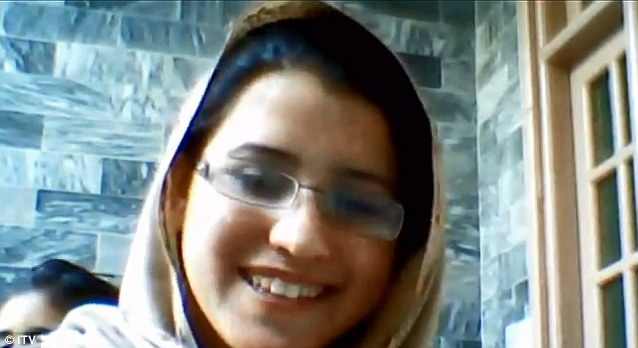

Life was pretty peacful. As a girl in Pakistan, I grew up a modest life. I lived with two brothers, Kushal and Atal. My mother went to school, but dropped out the same year. She was also illiterate. My father, however, was literate. Me and my father had close relationships, which was unusual for a daughter in Pakistan (Yousafzai 13).

I heard about political events like the American CIA shooting down Osama Bin Laden at a residence. Osama was shot down at Abbotabad, Pakistan, by the American CIA. Fourty American Helicopters landed on the compound. Osama and five of his sons were killed in U.S. gunfire ("Osama Bin Laden Killed", 2011).
I also learned about the life of Pakistan's founder Mohammad Ali Jinnah. He studied under the light of the street lamps because there were no lights at his house. He had a quote from Abraham Lincon in Pashto that says failing is better than cheating (Yousafzai 72).
But the reason that I am at the level I am today was because of Benazir Bhutto. Benazir Bhutto was a femlale Pakistani leader who stood up for a democratic government, as opposed to the dictatorship. I praised her as, "She was our role model. She symbolized the end of dictatorship and the beginning of democracy" (Yousafzai 129).